Starter deck, layout reference
What the ten slides look like when generated, and which layout each one landed on. Captured 27 Aug 2026 from qc1, Glaze mood.
The content spec assigns every slide a layout by name and writes the copy to that layout's node count and character band. This page is the check: the same ten slides, generated, so you can see whether the layout actually arrived.
The headline result is that the layouts land and the copy does not. Nine of ten slides got a sensible layout for their node count. But the generator rewrote almost every string, usually much shorter than written. On slide 3, "One line about the deck you want. Good when you are starting cold." came back as "Start fresh."
That matters for how the spec gets used: the character bands govern what the generator produces, not what you type into the prompt. If the exact copy is the point, and on a deck that ships to every new user it is, generate for structure and then type the real words into the slides.
Scoreboard
| # | Layout asked for | What arrived | Verdict |
|---|---|---|---|
| 1 | Text, headline cover | Cover with image band | as specified |
| 2 | Comparison, 2 nodes | Two column, 3 bullets each | copy rewritten |
| 3 | Icon List grid, 5 nodes | Icon List vertical, 5 nodes | copy gutted |
| 4 | Image List, 3 nodes | Single image plus list | one image, not three |
| 5 | Icon List vertical, 3 nodes | Three column on image | close enough |
| 6 | Image grid, 6 nodes | 3 by 2 card grid, 6 nodes | as specified |
| 7 | Column chart, 10 bars | Gauge chart, 1 value | data destroyed |
| 8 | Icon cards, 3 nodes | Three cards, pinned to the bottom | badly composed |
| 9 | Circular loop, 4 nodes | Closed loop, 4 nodes | as specified |
| 10 | Text, headline close | Closing with photo | as specified |
Slide 7 is the only outright failure, and it is a bad one. Ten data points went in and a
gauge chart came out showing "Slide 1, score 100". Gauge is a one-value layout
(nodecount 1-1), so nine of the ten values were dropped rather than squeezed. Any
slide whose point is a distribution has to be checked, because the failure is silent: the slide
looks finished.
Slide by slide
Each shot is the editor canvas at 1680 wide, cropped to the slide.
- Asked for
Text / Headline, no nodes, code MM- Arrived
- Cover with a full-width image band over the brand fill
- Copy drift
- "Made here, in four minutes" became "Presentations.AI: Made here"
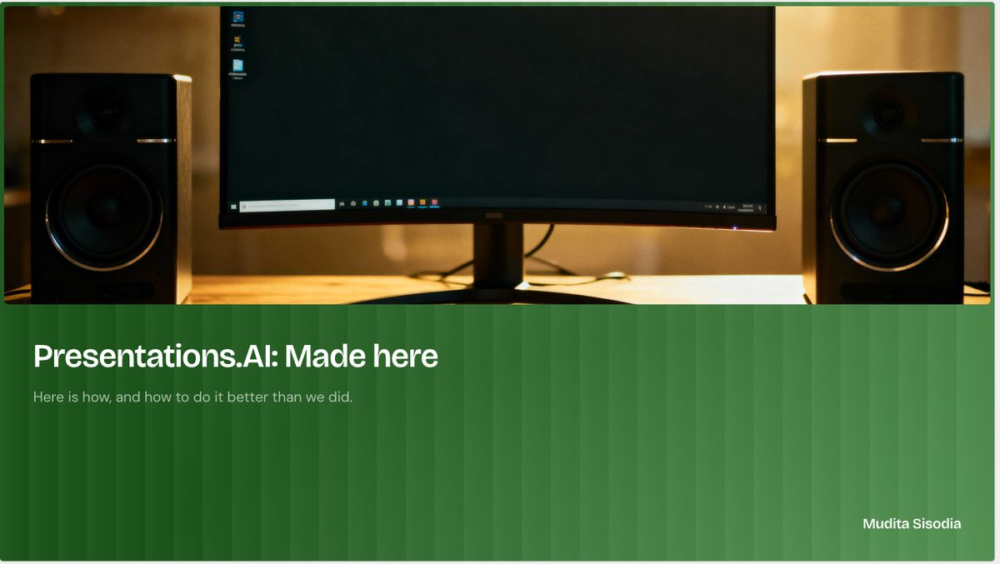
The subtitle survived intact. The title picked up a company prefix it was not asked for.
- Asked for
Diagram / Comparison, 2 nodes, code SM- Arrived
- Two column comparison, but each side became three bullets
- Copy drift
- Two full sentences became six two-word bullets
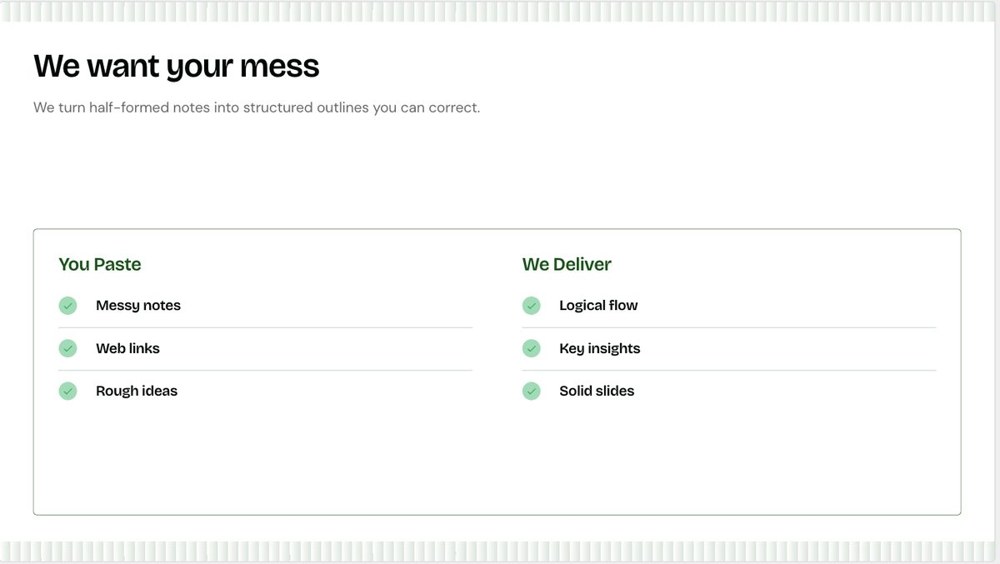
The layout is right and the argument is gone. "Half-formed notes, an open question, a number you are not sure about" became "Messy notes".
- Asked for
List / Icon List, grid, 5 nodes, code SM- Arrived
- Icon List vertical, 5 nodes. Right family, wrong arrangement
- Copy drift
- Every description cut to two or three words
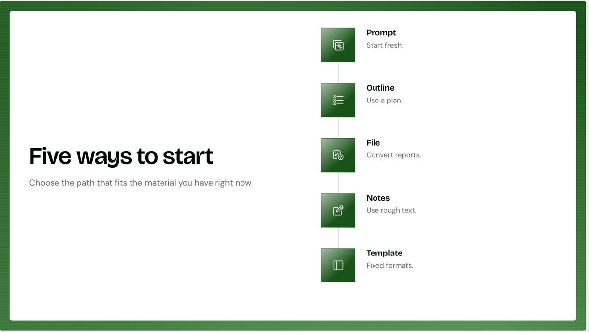
Node count held at five. The bodies did not: "Good when you are starting cold" became "Start fresh."
Remix gets you the grid. The panel below shows the alternatives available at five nodes. The top card is what generated; the rest are one click away.
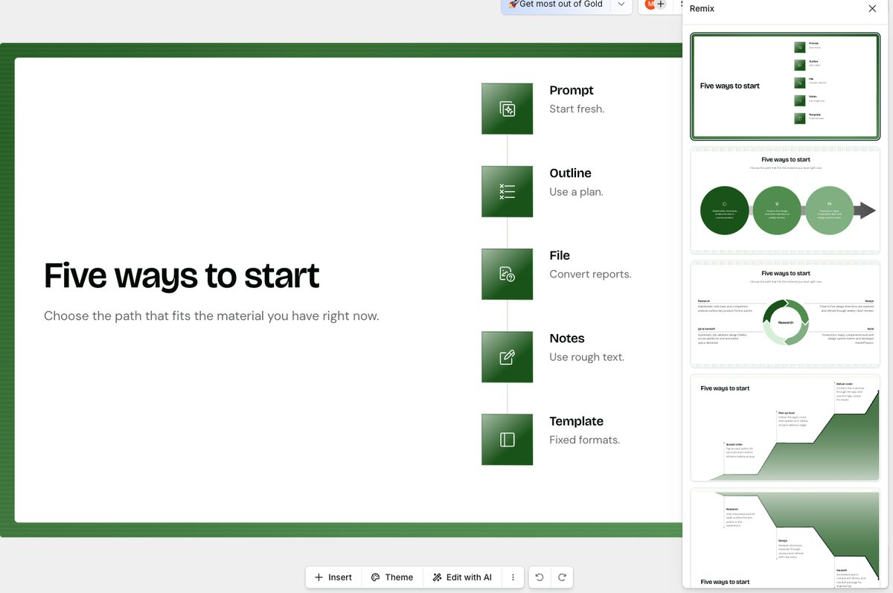
- Asked for
List / Image List, horizontal, 3 nodes, code SM- Arrived
- One large stock image beside a numbered three point list
- Why it matters
- The slide's whole argument is one layout in three brands. One image cannot make it
This is the slide that was always going to need hand-made images. The generator cannot invent three brand renders of the same layout, and the green app icon it reached for says nothing.
The copy here breaks a naming rule. Point 01 reads "Your mark on every page." Mark covers a logo, an icon, a badge and a watermark and so identifies none of them. The word to use is logo. Worth knowing the generator produces it unprompted, because it will keep doing so.
- Asked for
List / Icon List, vertical, 3 nodes, code MM- Arrived
- A photo band across the top, three numbered columns on white below it
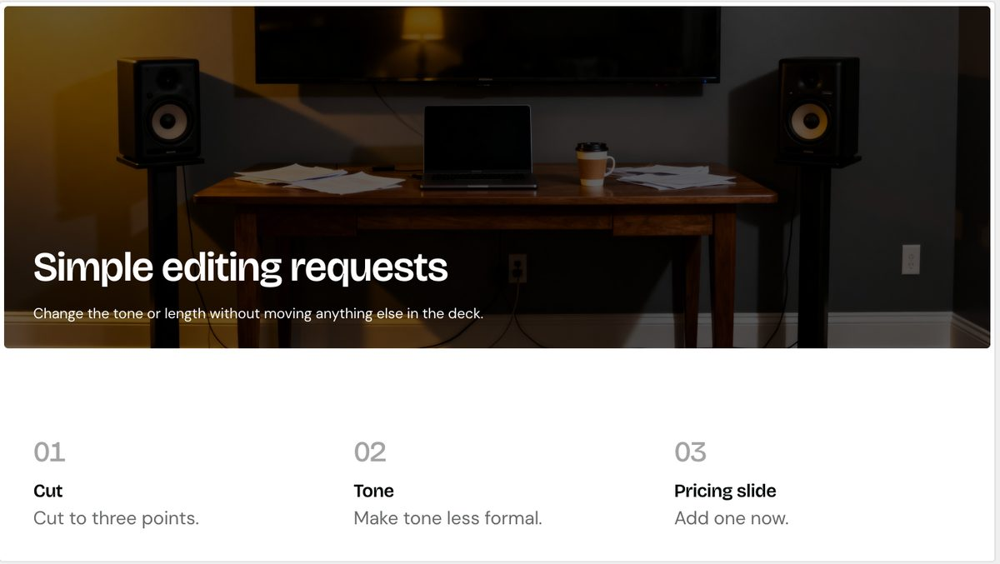
Three nodes held and the structure reads well. The requests lost their shape though: "Cut this to three points" became a heading of "Cut" over a body of "Cut to three points."
- Asked for
List / Image List, grid, 6 nodes, code SS- Arrived
- A clean 3 by 2 card grid, all six nodes present and legible
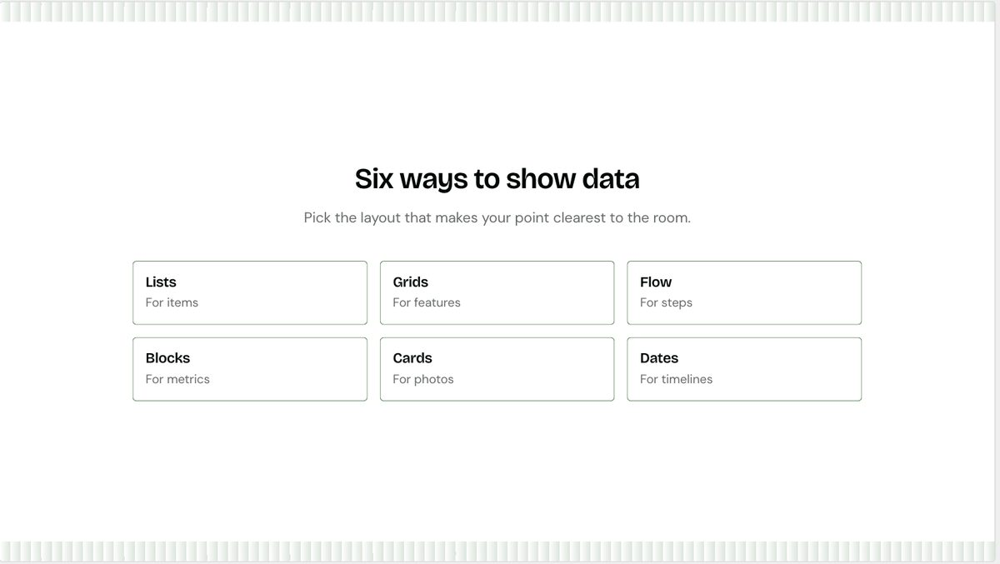
The slide written shortest is the slide that came out best. Six nodes at code SS holds together exactly as the bands predict.
It arrived without images, which is fine: this slide needs six real layout renders dropped in by hand anyway, and the card grid is the right frame to drop them into.
- Asked for
Data / Column Chart, 10 categories, 1 series- Arrived
- A gauge chart reading "Slide 1, score 100"
- Damage
- Nine of ten values dropped. Gauge is
nodecount 1-1
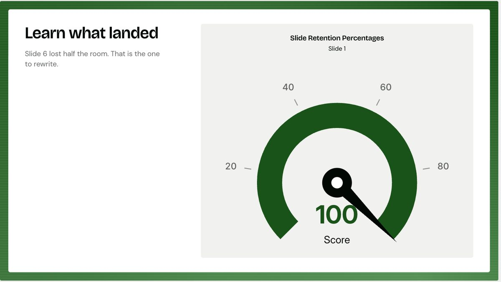
The subtitle still says "Slide 6 lost half the room", which the chart no longer shows. A slide that contradicts itself and looks finished.
The fix is one Remix away, and the panel below has real column charts in it. Note that the alternatives preview against sample data, so check the ten values survive the swap rather than assuming they do.
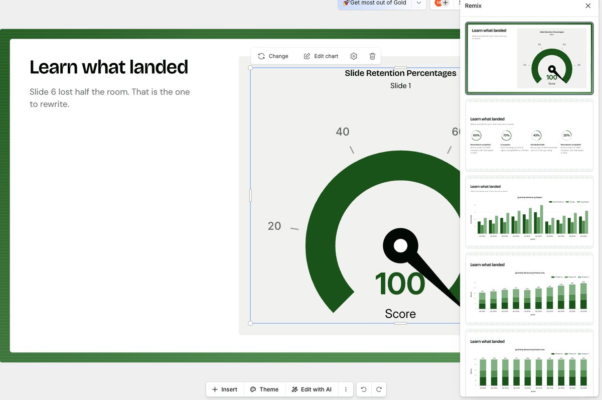
- Asked for
List / Icon List, cards, 3 nodes, code MM- Arrived
- Three icon cards, but pinned to the bottom under a large empty band
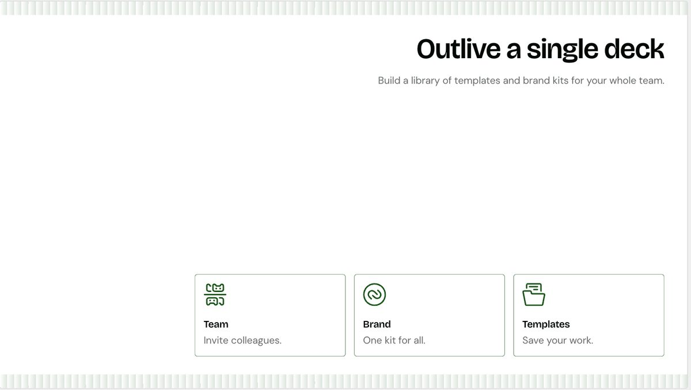
The right layout, badly placed. Title top right, cards bottom, and roughly half the slide is empty in between.
This is the composition failure the node counts cannot catch. The layout is correct and the slide still looks wrong, because the content group was placed without filling the space. Remix is the fix, and it is the reason a generated deck needs eyes on every slide rather than a spot check.
- Asked for
Diagram / Circular, Loop Sequence, 4 nodes, code MM- Arrived
- A true closed loop, four arrows, four labelled nodes
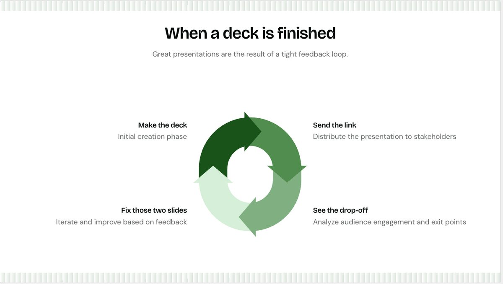
The best layout match in the deck. Four nodes is both the Loop Sequence default and the diagram engine's own maximum, which is why it is the safest slide here.
The copy still drifted the wrong way: "Then send it again" became "Iterate and improve based on feedback", which is the generic advice the original line was written to avoid.
- Asked for
Text / Headline, no nodes, code MM- Arrived
- Closing slide, title and subtitle intact
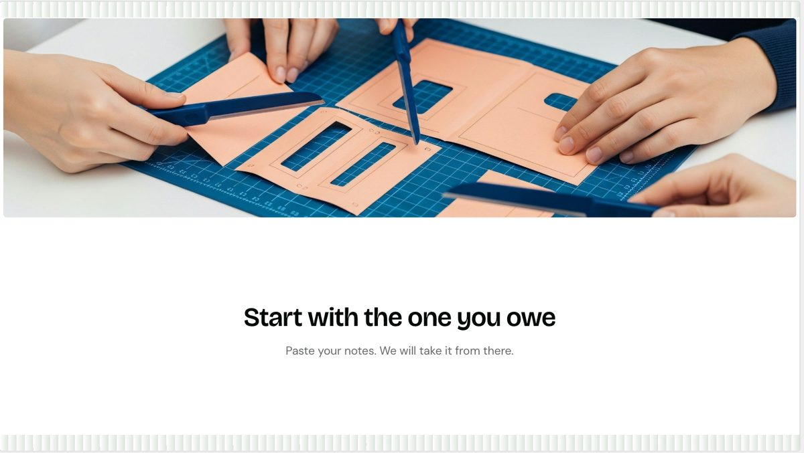
Both strings survived word for word, which makes it the only slide in the deck where they did.
The stock imagery is the weak thread across the whole deck. Paper craft on a blue cutting mat here, a green app icon on slide 4, studio speakers on slide 5. None of them relate to what the slide says, and the blue fights the green theme. On a deck whose job is to be the best looking thing in an empty dashboard, every one of these gets replaced by hand.
What this changes
Generate for structure, type for words. The node counts in the content spec do their job: the generator respects them and picks a layout that fits. The copy does not survive, so treat the prompt as a way to get ten correctly shaped slides and then paste the real strings in.
The "mirror your sections" option preserves order, not wording. Its own description says "your order and wording preserved". Order held on all ten slides. Wording held on one. Worth raising with whoever owns that string.
Charts need checking every time. Slide 7 is the case that should worry anyone: a silent, confident, wrong slide. Nothing in the interface flags that nine values were discarded.
Two slides still need hand-made images, exactly as the content spec called out: three brand renders on slide 4, six layout renders on slide 6. The generator produced good frames to drop them into.
Every stock image needs replacing, not just those two. The deck reached for speakers, an app icon and a paper-craft photo, none of which relate to their slide, and the last one is blue against a green theme.
A correct layout can still be a badly composed slide. Slide 8 gets the right three cards and drops them at the bottom under half a slide of white. Node counts predict which layout is offered; they say nothing about whether the result fills the frame.
Source deck: qc1.pitchdeck.io doc 394277, "Presentations.AI: A four minute guide to
better decks", generated 27 Aug 2026 from the prompt in the
content spec. Mood: Glaze.